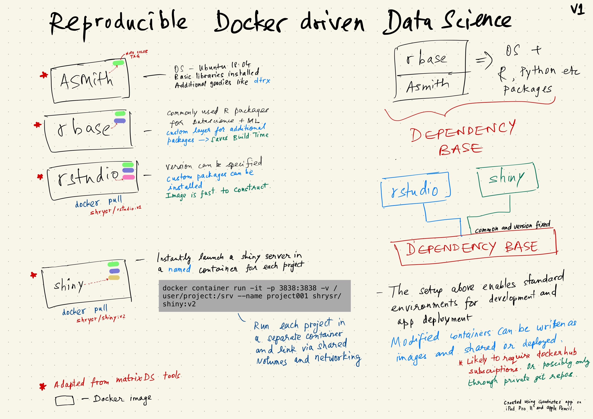
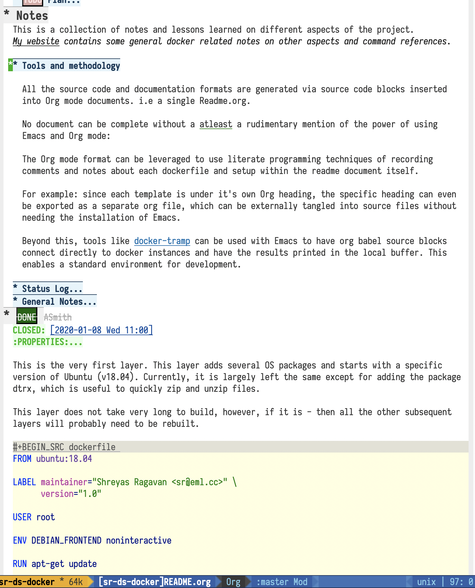

Docker driven datascience environment and workflow.
Readme on Readthedocs:
Docker image Cloud Build Status. Note: Sometimes images are built locally and pushed dockerhub


1 TL;DR
- The Init section will grow to contain everything that you need to know this project and get started with using the tools.
- The easiest way at the moment to test-drive these containers is via the Matrix DS platform. Here is a project you can forklift, that has the shiny image added as a custom tool that can be launched.
- One alternate method currently available to read the documentation is via readthedocs
2 Init
The starting point of this project was Matt Dancho's shinyauth docker file, which then expanded into adapting the well designed Matrix DS tools for my purpose. Their stack of docker based tools is replicated here with my customization which adds libraries and other functionality.
The goal is to develop a workflow based on Docker (and other tools) to create a reproducible, standard, consistent environment to run a variety of datascience projects, with different development and production environments. In particular, I want to be able to develop and deploy dashboards like shiny or streamlit.io quickly and with ease.
This Readme consists of the entire documentation and source code, maintained in a single Org mode document which is used to regenerate and manage the entire source code and the exports to markdown and rst. i.e Literate Programming in all it's splendor and warts.
Why not just use the MatrixDS stack directly and add the missing packages as layers?
In a sense, that is what I did, except that I constructed my own base image instead of relying on modifying a MatrixDS image. I also wanted to build these images by hand as my set of tools, even if the tools were largely similar to the MatrixDS stack. From whatever I've learned of Docker - the MatrixDS stack is quite efficient and the cascading + common dependency layer makes sense to use. There may be other methods, but this certainly appeared technically sensible.
The main containers to be aware of, and also hosted on dockerhub are :
- shrysr/asmith
- shrysr/rbase
- shrysr/rstudio
- shrysr/shiny
- One of the earlier versions created is at shrysr/datasciencer, however, this has been superceded by the above images, and may grow into something different.
The rbase image is built on the first asmith image. The RStudio and Shiny images are based of a common rbase dependency environment. However, additional packages can be specified for these, and it is not necessary to rebuild the rbase layer each time.

2.1 Launching the docker containers
The following snippets are examples for launching containers powered by these images. Individual snippets are placed along with the documentation of each docker container, and will be incorporated into corresponding readme's eventually.
[ ]incorporate the container launch instructions into individual docker repo readme.
2.1.1 Launch a shiny container
For example, assuming your shiny app and project folder is /Users/superman/my-shiny-app/. Then a shiny server as a container can be launched as simply as:
docker container run -itd -p 3838:3838 -v /Users/superman/my-shiny-app/:/srv shrysr/shiny:v2
2.1.2 Multiple ports
Example for launching a temporary shiny server with 2 ports exposed for 2 processes, and specifying the location of the apps and the logs.
#+/bin/bash docker container run -Pit -d --rm -p 3838:3838 -p 8787:8787 \ -v /Users/shrysr/my_projects/sr-ds-docker/test_app/:/srv/shiny-server/test_app \ -v /Users/shrysr/my_projects/sr-ds-docker/test_app/log/shiny-server/:/var/log/shiny-server/ \ shrysr/datasciencer:test
2.2 Plan
2.2.1 List of images planned
- Development : R based
- R Shiny server - version to be specified
- R studio server:latest
- Tidyverse + ML + EDA packages - version to be specified.
- Production for Shiny apps
- R Shiny server : the same version as corresponding development image
- Tidyverse + ML + EDA packages : the same versions corresponding to development image
2.2.2 Tasks
- Primary
[3/8]
[ ]provide specific versions of atleast the major components, like docker images, and meta-packages and other tools.[X]Efficient method to update system package versions.[X]Efficient method to update R packages painlessly.[X]Start with a minimal OS layer, like Ubuntu or even Alpine.[ ]Create tests to ensure the docker image is working as expected. Consider techniques like Continuous Integration (CI)[ ]Add a file with the R session, package and other relevant information to be automatically generated when a container is run and printed to a file in the working directory.[ ]Create distinct production and development environments with clear philosophies.[ ]Document using org mode source blocks and ESS to docker containers.
- Good to have
[0/2]
[ ]Construct my own shiny server rather than relying on an external official image.[ ]Evaluate integrating workflows using Drake,
3 Docker Compose
4 YAML
4.1 Github Workflows
4.1.1 rbase YAML for CI with github
name: Docker Image CI
on: [push]
jobs:
build:
runs-on: ubuntu-latest
steps:
- uses: actions/checkout@v1
- name: Build rbase
run: docker build rbase/. --file rbase/Dockerfile --tag my-image-name:$(date +%s)
4.1.2 Rstudio YAML for CI with github
name: Docker Image CI
on: [push]
jobs:
build:
runs-on: ubuntu-latest
steps:
- uses: actions/checkout@v1
- name: Build rstudio
run: docker build rstudio/. --file rstudio/Dockerfile --tag my-image-name:$(date +%s)
4.1.3 Shiny YAML for CI with github
name: Docker Image CI
on: [push]
jobs:
build:
runs-on: ubuntu-latest
steps:
- uses: actions/checkout@v1
- name: Build shiny
run: docker build shiny/. --file shiny/Dockerfile --tag my-image-name:$(date +%s)
5 ASmith
This is the very first layer. This layer adds several OS packages and starts with a specific version of Ubuntu (v18.04). Currently, it is largely left the same except for adding the package dtrx, which is useful to quickly zip and unzip files.
This layer does not take very long to build, however, if it is - then all the other subsequent layers will probably need to be rebuilt.
5.1 Dockerfile
FROM ubuntu:18.04 LABEL maintainer="Shreyas Ragavan <sr@eml.cc>" \ version="1.0" USER root ENV DEBIAN_FRONTEND noninteractive RUN apt-get update # Install all basic OS dependencies RUN apt-get update \ && apt-get install -yq --no-install-recommends \ apt \ apt-utils \ bash-completion \ build-essential \ byacc \ bzip2 \ ca-certificates \ emacs \ file \ flex \ fonts-dejavu \ fonts-liberation \ fonts-texgyre \ g++ \ gcc \ gettext \ gfortran \ git \ gnupg2 \ gsfonts \ hdf5-tools \ icu-devtools \ jed \ lmodern \ locales \ make \ mesa-common-dev \ nano \ netcat \ openjdk-8-jdk \ pandoc \ software-properties-common \ sudo \ texlive-fonts-extra \ texlive-fonts-recommended \ texlive-generic-recommended \ texlive-latex-base \ texlive-latex-extra \ texlive-xetex \ tzdata \ unzip \ vim \ wget \ zip \ libsodium-dev \ && echo "en_US.UTF-8 UTF-8" >> /etc/locale.gen \ && locale-gen en_US.utf8 \ && /usr/sbin/update-locale LANG=en_US.UTF-8 # make the "en_US.UTF-8" locale so postgres will be utf-8 enabled by default ENV LANG=en_US.utf8 \ LC_ALL=en_US.UTF-8 \ TERM=xterm \ APT_KEY_DONT_WARN_ON_DANGEROUS_USAGE=1 # Install additional libraries RUN apt-get install -yq --no-install-recommends \ libblas-dev \ libcurl4 \ libcurl4-gnutls-dev \ libgdal-dev \ libglu1-mesa-dev \ libgmp3-dev \ libicu60 \ libjpeg-turbo8 \ libmagick++-dev \ libmariadb-client-lgpl-dev \ libmpfr-dev \ libmpfr-dev \ libncurses5-dev \ libnettle6 \ libnlopt-dev \ libopenblas-dev \ libpango1.0-0 \ libpangocairo-1.0-0 \ libpng16-16 \ libpq-dev \ libsasl2-dev \ libsm6 \ libssl-dev \ libtiff5 \ libtool \ libudunits2-dev \ libxext-dev \ libxml2-dev \ libxrender1 \ zlib1g-dev \ dtrx # Set timezone noninteractively RUN ln -fs /usr/share/zoneinfo/US/Pacific /etc/localtime # Python stuff RUN apt-get install -y --no-install-recommends \ python-pip \ python-setuptools \ python-wheel \ python-dev \ python3-pip \ python3-setuptools \ python3-wheel \ python3-dev \ && apt-get clean #install git, vim RUN apt-get install -y git \ vim \ curl #install kaggle cli RUN pip install kaggle dvc tensorflow keras pandas #mongo cli RUN apt-get install -y mongodb-clients #mysql shell RUN apt-get install -y mysql-client #postgre shell RUN apt-get install -y postgresql-client # Add Tini ENV TINI_VERSION v0.18.0 ADD https://github.com/krallin/tini/releases/download/${TINI_VERSION}/tini /tini RUN chmod +x /tini ENTRYPOINT ["/tini", "--"] RUN apt-get clean \ && rm -rf /var/lib/apt/lists/*
5.2 ASmith YAML for CI with github
name: Docker Image CI
on: [push]
jobs:
build:
runs-on: ubuntu-latest
steps:
- uses: actions/checkout@v1
- name: Build Asmith
run: docker build asmith/. --file asmith/Dockerfile --tag my-image-name:$(date +%s)
6 rbase
This layer contains all the basic R packages required for datascience and ML. A bunch of packages were added to the already extensive default list of packages in MatrixDS's docker file.
The packages are defined in an R script called packages.R.
This layer takes a tremendously long time to build. A couple of hours on a Macbook Pro 2019, with 6 cores and 32 GB of RAM. One should be careful in assessing whether this layer has to be disturbed. Automated builds on Dockerhub are likely to take even longer.
Note: As such the dockerfile indicates that the packages are called in the last 2 layers only. It may be possible that subsequent image builds do not take as much time as I imagine.
[ ]It may be easier to find a way to keep the additional packages specified in the rstudio and shiny package list to be in sync.
6.1 R package list - BASE
This is a list of the basic packages being installed. These conver many commonly used libraries for data science. This layer will take a Long time to install.
Do not install custom libraries to this layer. Install in the next layer.
#Script for common package installation on MatrixDS docker image p<-c('nnet','kknn','randomForest','xgboost','tidyverse','plotly','shiny','shinydashboard', 'devtools','FinCal','googleVis','DT', 'kernlab','earth', 'htmlwidgets','rmarkdown','lubridate','leaflet','sparklyr','magrittr','openxlsx', 'packrat','roxygen2','knitr','readr','readxl','stringr','broom','feather', 'forcats','testthat','plumber','RCurl','rvest','mailR','nlme','foreign','lattice', 'expm','Matrix','flexdashboard','caret','mlbench','plotROC','RJDBC','rgdal', 'highcharter','tidyquant','timetk','quantmod','PerformanceAnalytics','scales', 'tidymodels','C50', 'parsnip','rmetalog','reticulate','umap', 'glmnet', 'easypackages', 'drake', 'shinythemes', 'shinyjs', 'recipes', 'rsample', 'rpart.plot', 'remotes', 'DataExplorer', 'inspectdf', 'janitor', 'mongolite', 'jsonlite', 'config' ) install.packages(p,dependencies = TRUE)
6.2 R Package list - CUSTOM
Add your custom packages to this layer. In this way, only the additional packages are installed in a new layer.
#Script for common package installation on MatrixDS docker image PKGS <- c( "tidyverse", "mapproj", "maps", "genius", "shinycssloaders", "gmailr" ) install.packages(PKGS, dependencies = TRUE) # These packages are sometimes not available for the current R version # , and therefore installed directly from github devtools::install_github("tidyverse/googlesheets4", dependencies = TRUE) devtools::install_github("PMassicotte/gtrendsR", dependencies = TRUE)
6.3 Dockerfile
FROM shrysr/asmith:v1 LABEL maintainer="Shreyas Ragavan <sr@eml.cc>" \ version="1.0" #install some helper python packages RUN pip install sympy numpy # R Repo, see https://cran.r-project.org/bin/linux/ubuntu/README.html RUN echo 'deb https://cloud.r-project.org/bin/linux/ubuntu bionic-cran35/' >> /etc/apt/sources.list RUN apt-key adv --keyserver hkp://keyserver.ubuntu.com:80 --recv-keys E298A3A825C0D65DFD57CBB651716619E084DAB9 RUN add-apt-repository ppa:marutter/c2d4u3.5 # R-specific packages RUN apt-get update \ && apt-get install -y --no-install-recommends \ r-base \ r-base-core \ r-recommended \ r-base-dev \ r-cran-boot \ r-cran-class \ r-cran-cluster \ r-cran-codetools \ r-cran-foreign \ r-cran-kernsmooth \ r-cran-matrix \ r-cran-rjava \ r-cran-rpart \ r-cran-spatial \ r-cran-survival COPY packages.R /usr/local/lib/R/packages.R COPY custom_packages.R /usr/local/lib/R/custom_packages.R # Install Basic R packages for datascience and ML RUN R CMD javareconf && \ Rscript /usr/local/lib/R/packages.R # Though this has been installed upstream, apprently it has to be setup again. RUN apt-get update \ && apt-get install -y --no-install-recommends libsodium-dev # Install custom set of R packages. This is on a separate layer for efficient image construction RUN Rscript /usr/local/lib/R/custom_packages.R
*
7 Shiny
Overview of the process:
Suppose you have a project folder within which related scripts, shiny apps, etc live. This directory is mounted as a volume to the docker container. The docker container will check for the presence of a folder called shiny-server and if not available, will create it. Even if the folder is available, the contents of test_apps will be copied into the image.
Into the shiny-server folder, the test_apps folder containing shiny apps for testing are copied.
7.1 Environment and Profile
R_LIBS=/usr/local/lib/R/site-library:/usr/local/lib/R/library:/usr/lib/R/library:/srv/R/library
.libPaths("/srv/R/library/") # Things you might want to change # options(papersize="a4") # options(editor="notepad") # options(pager="internal") # R interactive prompt # options(prompt="> ") # options(continue="+ ") # to prefer Compiled HTML help options(chmhelp=TRUE) # to prefer HTML help # options(htmlhelp=TRUE) # General options options(tab.width = 4) options(width = 130) options(graphics.record=TRUE) .First <- function(){ library(Hmisc) library(R2HTML) cat("\nWelcome at", date(), "\n") } .Last <- function(){ cat("\nGoodbye at ", date(), "\n") }
7.2 app.r
# # This is a Shiny web application on MatrixDS. # # Find out more about building applications with Shiny here: # # http://shiny.rstudio.com/ # ########################################################################################## # This points the Shiny server tool to any libraries installed with RStudio # that means that any library you install on your RStudio instance in this project, # will be available to the shiny server ########################################################################################## .libPaths( c( .libPaths(), "/srv/.R/library") ) ########################################################################################## # Here you can call all the required libraries for your code to run ########################################################################################## library(shiny) ########################################################################################## # For deploying tools on MatrixDS, we created this production variable # when set to true, your shiny app will run on the shiny server tool upon clicking open # when set to false, your shiny app will run when you hit the "Run App" button on RStudio ########################################################################################## production <- TRUE ########################################################################################## # The shiny server tool uses a different absolute path than RStudio. # this if statement denotes the correct path for the 2 values of the production variable ########################################################################################## if(production == FALSE) { #if you using the RStudio tool shiny_path <- "~/shiny-server/" home_path <- "~/" } else { #if you are using the shiny tool shiny_path <- "/srv/shiny-server/" home_path <- "/srv/" } ########################################################################################## # To call a file/artifact in your MatrixDS project use the following line of code # this example uses the function read.csv # my_csv <- read.csv(paste0(home_path,"file_name.csv")) ########################################################################################## # Define UI for application that draws a histogram ui <- fluidPage( # Application title titlePanel("Old Faithful Geyser Data"), # Sidebar with a slider input for number of bins sidebarLayout( sidebarPanel( sliderInput("bins", "Number of bins:", min = 1, max = 50, value = 30) ), # Show a plot of the generated distribution mainPanel( plotOutput("distPlot") ) ) ) # Define server logic required to draw a histogram server <- function(input, output) { output$distPlot <- renderPlot({ # generate bins based on input$bins from ui.R x <- faithful[, 2] bins <- seq(min(x), max(x), length.out = input$bins + 1) # draw the histogram with the specified number of bins hist(x, breaks = bins, col = 'darkgray', border = 'white') }) } # Run the application shinyApp(ui = ui, server = server)
7.3 shiny server script
This is script to execute or run the shiny server. Apparently, it is necessary to be called via script in this fashion for the process to work, rather than the docker file itself. In a way this helps keeping the code modular. It is generally unlikely any changes would be needed here.
#!/bin/sh # Make sure the directory for individual app logs exists mkdir -p /var/log/shiny-server chown shiny.shiny /var/log/shiny-server if [ "$APPLICATION_LOGS_TO_STDOUT" = "false" ]; then exec shiny-server 2>&1 else # start shiny server in detached mode exec shiny-server 2>&1 & # push the "real" application logs to stdout with xtail exec xtail /var/log/shiny-server/ fi
7.4 packages
#Script for common package installation on MatrixDS docker image p<-c('reticulate') install.packages(p,dependencies = TRUE)
7.5 version
7.6 Dockerfile
The folder test_apps will contain shiny apps meant to test functionality. This is copied into the docker image.
[ ]During the image build, there were messages that the rmarkdown and shiny libraries could not be installed for this version of R. However, the shiny apps do display in the browser. This needs to be investigated.
Changes: Reduced a step and added the tree package. This makes it easier to troubleshoot.
FROM shrysr/rbase:v2 LABEL maintainer="Shreyas Ragavan <sr@eml.cc>" \ version="2.0" COPY packages.R /usr/local/lib/R/packages.R #install R packages RUN R CMD javareconf && \ Rscript /usr/local/lib/R/packages.R RUN apt-get update && apt-get install -y \ gdebi-core \ pandoc \ pandoc-citeproc \ libcurl4-gnutls-dev \ libcairo2-dev \ libxt-dev \ xtail \ tree COPY entrypoint.sh /entrypoint.sh RUN mkdir -p /root/shiny-server/ \ && mkdir -p /root/shiny-server/test_shiny/ COPY test_apps/ /root/shiny-server/test_shiny/ # Download and install shiny server RUN wget --no-verbose https://download3.rstudio.org/ubuntu-14.04/x86_64/VERSION -O "version.txt" && \ VERSION=$(cat version.txt) && \ wget --no-verbose "https://download3.rstudio.org/ubuntu-14.04/x86_64/shiny-server-$VERSION-amd64.deb" -O ss-latest.deb && \ gdebi -n ss-latest.deb && \ rm -f version.txt ss-latest.deb && \ . /etc/environment && \ R -e "install.packages(c('shiny', 'rmarkdown'), repos='$MRAN')" && \ cp -R /usr/local/lib/R/site-library/shiny/examples/* /srv/shiny-server/ RUN \ apt-get update && apt-get install -y && \ DEBIAN_FRONTEND=noninteractive apt install --no-install-recommends -y -o Dpkg::Options::="--force-confdef" -o Dpkg::Options::="--force-confold" \ default-jre default-jdk \ && apt-get clean && \ usermod -u 1100 shiny && \ groupmod -g 1100 shiny && \ chown -R shiny:shiny /srv && \ chown -R shiny:shiny /srv && \ chmod +x /entrypoint.sh COPY shiny-server.sh /usr/bin/shiny-server.sh #CMD ["sh", "/usr/bin/shiny-server.sh"] ENTRYPOINT ["sh", "-c", "/entrypoint.sh >>/var/log/stdout.log 2>>/var/log/stderr.log"]
7.7 entrypoint
The dockerfile copied the contents of test_apps into the root/shiny-server/test_shiny directory. Now via shell script (entrypoint.sh), the contents from root/shiny-server/test_shiny within the container are copied in a folder called /srv/shiny-server within the container. Now the final /srv/shiny-server is matched with the specified mount volume.
#!/bin/bash mkdir -p /srv/shiny-server mkdir -p /srv/.R/library [ -f /srv/.Rprofile ] || echo '.libPaths("/srv/.R/library/")' > /srv/.Rprofile [ -f /srv/.Renvron ] || echo 'R_LIBS=/usr/local/lib/R/site-library:/usr/local/lib/R/library:/usr/lib/R/library:/srv/.R/library ' > /srv/.Renvron if [ ! -d "/srv/shiny-server" ] then mkdir -p /srv/shiny-server cp -r /root/shiny-server/test_shiny/ /srv/shiny-server/ else if [ ! "$(ls -A /srv/shiny-server)" ] then cp -r /root/shiny-server/test_shiny/ /srv/shiny-server/ fi fi sh /usr/bin/shiny-server.sh
7.8 Container launch and image build command samples
The local path should be the outermost project folder. Any location specified will have a folder created shiny-server within which the shiny test apps will be placed. Note that the correct tag version should be substituted.
docker container run -itd --rm -p 3838:3838 -v /Users/shrysr/my_projects/sr-ds-docker/:/srv shrysr/shiny:v2
docker ps
docker kill wizardly_kirch
docker image build . -t shrysr/shiny:v2
docker exec -it inspiring_grothendieck /bin/bash
8 Rstudio
This layer contains a specified RStudio version built on top of the rbase layer. i.e all the R packages defined in the earlier layers will be available to this web based deployment of Rstudio server.
By default, the authentication is bypassed, though the password can be set via the ENV specification.
[ ]Define more variables to be made available in the docker-compose file.
8.1 Environment and Profile
R_LIBS=/usr/local/lib/R/site-library:/usr/local/lib/R/library:/usr/lib/R/library:/home/rstudio/.R/library
.libPaths("/home/rstudio/.R/library") # Things you might want to change # options(papersize="a4") # options(editor="notepad") # options(pager="internal") # R interactive prompt # options(prompt="> ") # options(continue="+ ") # to prefer Compiled HTML help options(chmhelp=TRUE) # to prefer HTML help # options(htmlhelp=TRUE) # General options options(tab.width = 4) options(width = 130) options(graphics.record=TRUE) cat("\nWelcome at", date(), "\n") } .Last <- function(){ cat("\nGoodbye at ", date(), "\n") }
8.2 Add shiny
#!/usr/bin/with-contenv bash ADD=${ADD:=none} ## A script to add shiny to an rstudio-based rocker image. if [ "$ADD" == "shiny" ]; then echo "Adding shiny server to container..." apt-get update && apt-get -y install \ gdebi-core \ libxt-dev && \ wget --no-verbose https://s3.amazonaws.com/rstudio-shiny-server-os-build/ubuntu-12.04/x86_64/VERSION -O "version.txt" && \ VERSION=$(cat version.txt) && \ wget --no-verbose "https://s3.amazonaws.com/rstudio-shiny-server-os-build/ubuntu-12.04/x86_64/shiny-server-$VERSION-amd64.deb" -O ss-latest.deb && \ gdebi -n ss-latest.deb && \ rm -f version.txt ss-latest.deb && \ install2.r -e shiny rmarkdown && \ cp -R /usr/local/lib/R/site-library/shiny/examples/* /srv/shiny-server/ && \ rm -rf /var/lib/apt/lists/* && \ mkdir -p /var/log/shiny-server && \ chown shiny.shiny /var/log/shiny-server && \ mkdir -p /etc/services.d/shiny-server && \ cd /etc/services.d/shiny-server && \ echo '#!/bin/bash' > run && echo 'exec shiny-server > /var/log/shiny-server.log' >> run && \ chmod +x run && \ adduser rstudio shiny && \ cd / fi if [ $"$ADD" == "none" ]; then echo "Nothing additional to add" fi
8.3 Encrypted sign in
<!DOCTYPE html> <!-- # # encrypted-sign-in.htm # # Copyright (C) 2009-17 by RStudio, Inc., MatrixDS # # This program is licensed to you under the terms of version 3 of the # GNU Affero General Public License. This program is distributed WITHOUT # ANY EXPRESS OR IMPLIED WARRANTY, INCLUDING THOSE OF NON-INFRINGEMENT, # MERCHANTABILITY OR FITNESS FOR A PARTICULAR PURPOSE. Please refer to the # AGPL (http://www.gnu.org/licenses/agpl-3.0.txt) for more details. # --> <html> <head> <script type="text/javascript" src="/js/encrypt.min.js"></script> <script type="text/javascript"> function prepare() { try { var payload = "rstudio" + "\n" + "matrix"; var xhr = new XMLHttpRequest(); xhr.open("GET", "/auth-public-key", true); xhr.onreadystatechange = function() { try { if (xhr.readyState == 4) { if (xhr.status != 200) { var errorMessage; if (xhr.status == 0) errorMessage = "Error: Could not reach server--check your internet connection"; else errorMessage = "Error: " + xhr.statusText; if (typeof(errorp.innerText) == 'undefined') console.log(errorMessage); else console.log(errorMessage); } else { var response = xhr.responseText; var chunks = response.split(':', 2); var exp = chunks[0]; var mod = chunks[1]; var encrypted = encrypt(payload, exp, mod); document.getElementById('persist').value = 1; document.getElementById('package').value = encrypted; document.getElementById('clientPath').value = window.location.pathname; document.realform.submit(); } } } catch (exception) { console.log("Error: " + exception); } }; xhr.send(null); } catch (exception) { console.log("Error: " + exception); } } function submitRealForm() { if (prepare()) document.realform.submit(); } </script> </head> <form action="auth-do-sign-in" name="realform" method="POST"> <input type="hidden" name="persist" id="persist" value=""/> <input type="hidden" name="appUri" value=""/> <input type="hidden" name="clientPath" id="clientPath" value=""/> <input id="package" type="hidden" name="v" value=""/> </form> <script> submitRealForm(); </script> </body> </html>
8.4 Entrypoint
#!/bin/bash -e mkdir -p /home/rstudio/.R/library #cp /home/README.txt /home/rstudio/README.txt chown -R rstudio:rstudio /home/rstudio/.R [ -f /home/rstudio/.Rprofile ] || echo '.libPaths("/home/rstudio/.R/library")' > /home/rstudio/.Rprofile chown rstudio:rstudio /home/rstudio/.Rprofile [ -f /home/rstudio/.Renvron ] || echo 'R_LIBS=/usr/local/lib/R/site-library:/usr/local/lib/R/library:/usr/lib/R/library:/home/rstudio/.R/library ' > /home/rstudio/.Renvron chown rstudio:rstudio /home/rstudio/.Renvron #start RStudio /init
8.5 nginx conf
http { map $http_upgrade $connection_upgrade { default upgrade; '' close; } server { listen 80; location / { proxy_pass http://localhost:8787; proxy_redirect http://localhost:8787/ $scheme://$http_host/; proxy_http_version 1.1; proxy_set_header Upgrade $http_upgrade; proxy_set_header Connection $connection_upgrade; proxy_read_timeout 20d; } } }
8.6 Additional Packages
#Script for common package installation on MatrixDS docker image p<-c('reticulate') install.packages(p,dependencies = TRUE)
8.7 PAM helper
#!/usr/bin/env sh ## Enforces the custom password specified in the PASSWORD environment variable ## The accepted RStudio username is the same as the USER environment variable (i.e., local user name). set -o nounset IFS='' read -r password [ "${USER}" = "${1}" ] && [ "${PASSWORD}" = "${password}" ]
8.8 User settings
alwaysSaveHistory="0" loadRData="0" saveAction="0"
8.9 Userconf
#!/usr/bin/with-contenv bash ## Set defaults for environmental variables in case they are undefined USER=${USER:=rstudio} PASSWORD=${PASSWORD:=rstudio} USERID=${USERID:=1000} GROUPID=${GROUPID:=1000} ROOT=${ROOT:=FALSE} UMASK=${UMASK:=022} ## Make sure RStudio inherits the full path echo "PATH=${PATH}" >> /usr/local/lib/R/etc/Renviron bold=$(tput bold) normal=$(tput sgr0) if [[ ${DISABLE_AUTH,,} == "true" ]] then mv /etc/rstudio/disable_auth_rserver.conf /etc/rstudio/rserver.conf echo "USER=$USER" >> /etc/environment fi if grep --quiet "auth-none=1" /etc/rstudio/rserver.conf then echo "Skipping authentication as requested" elif [ "$PASSWORD" == "rstudio" ] then printf "\n\n" tput bold printf "\e[31mERROR\e[39m: You must set a unique PASSWORD (not 'rstudio') first! e.g. run with:\n" printf "docker run -e PASSWORD=\e[92m<YOUR_PASS>\e[39m -p 8787:8787 rocker/rstudio\n" tput sgr0 printf "\n\n" exit 1 fi if [ "$USERID" -lt 1000 ] # Probably a macOS user, https://github.com/rocker-org/rocker/issues/205 then echo "$USERID is less than 1000" check_user_id=$(grep -F "auth-minimum-user-id" /etc/rstudio/rserver.conf) if [[ ! -z $check_user_id ]] then echo "minumum authorised user already exists in /etc/rstudio/rserver.conf: $check_user_id" else echo "setting minumum authorised user to 499" echo auth-minimum-user-id=499 >> /etc/rstudio/rserver.conf fi fi if [ "$USERID" -ne 1000 ] ## Configure user with a different USERID if requested. then echo "deleting user rstudio" userdel rstudio echo "creating new $USER with UID $USERID" useradd -m $USER -u $USERID mkdir /home/$USER chown -R $USER /home/$USER usermod -a -G staff $USER elif [ "$USER" != "rstudio" ] then ## cannot move home folder when it's a shared volume, have to copy and change permissions instead cp -r /home/rstudio /home/$USER ## RENAME the user usermod -l $USER -d /home/$USER rstudio groupmod -n $USER rstudio usermod -a -G staff $USER chown -R $USER:$USER /home/$USER echo "USER is now $USER" fi if [ "$GROUPID" -ne 1000 ] ## Configure the primary GID (whether rstudio or $USER) with a different GROUPID if requested. then echo "Modifying primary group $(id $USER -g -n)" groupmod -g $GROUPID $(id $USER -g -n) echo "Primary group ID is now custom_group $GROUPID" fi ## Add a password to user echo "$USER:$PASSWORD" | chpasswd # Use Env flag to know if user should be added to sudoers if [[ ${ROOT,,} == "true" ]] then adduser $USER sudo && echo '%sudo ALL=(ALL) NOPASSWD:ALL' >> /etc/sudoers echo "$USER added to sudoers" fi ## Change Umask value if desired if [ "$UMASK" -ne 022 ] then echo "server-set-umask=false" >> /etc/rstudio/rserver.conf echo "Sys.umask(mode=$UMASK)" >> /home/$USER/.Rprofile fi ## add these to the global environment so they are avialable to the RStudio user echo "HTTR_LOCALHOST=$HTTR_LOCALHOST" >> /etc/R/Renviron.site echo "HTTR_PORT=$HTTR_PORT" >> /etc/R/Renviron.site
8.10 Dockerfile
FROM shrysr/rbase:v2 ARG RSTUDIO_VERSION ENV PATH=/usr/lib/rstudio-server/bin:$PATH #Creating etc folder at /usr/local/lib/R/ location Searce RUN mkdir -p /usr/local/lib/R/etc ## Download and install RStudio server & dependencies ## Attempts to get detect latest version, otherwise falls back to version given in $VER ## Symlink pandoc, pandoc-citeproc so they are available system-wide RUN apt-get update \ && apt-get install -y --no-install-recommends \ # file \ libapparmor1 \ libcurl4-openssl-dev \ libedit2 \ lsb-release \ psmisc \ libclang-dev \ && wget -O libssl1.0.0.deb http://ftp.debian.org/debian/pool/main/o/openssl/libssl1.0.0_1.0.1t-1+deb8u8_amd64.deb \ && dpkg -i libssl1.0.0.deb \ && rm libssl1.0.0.deb \ && RSTUDIO_LATEST=$(wget --no-check-certificate -qO- https://s3.amazonaws.com/rstudio-server/current.ver) \ && [ -z "$RSTUDIO_VERSION" ] && RSTUDIO_VERSION=$RSTUDIO_LATEST || true \ # hard code the latest v1.2 && wget -q https://s3.amazonaws.com/rstudio-ide-build/server/bionic/amd64/rstudio-server-1.2.1511-amd64.deb \ && dpkg -i rstudio-server-1.2.1511-amd64.deb \ #use this for latest # && wget -q http://download2.rstudio.org/rstudio-server-${RSTUDIO_VERSION}-amd64.deb \ # && dpkg -i rstudio-server-${RSTUDIO_VERSION}-amd64.deb \ && rm rstudio-server-*-amd64.deb \ # ## Symlink pandoc & standard pandoc templates for use system-wide && ln -Ffs /usr/lib/rstudio-server/bin/pandoc/pandoc /usr/local/bin \ && ln -Ffs /usr/lib/rstudio-server/bin/pandoc/pandoc-citeproc /usr/local/bin \ && git clone https://github.com/jgm/pandoc-templates \ && mkdir -p /opt/pandoc/templates \ && cp -r pandoc-templates*/* /opt/pandoc/templates && rm -rf pandoc-templates* \ # #&& mkdir /root/.pandoc \ && ln -s /opt/pandoc/templates /root/.pandoc/templates \ && apt-get clean \ && rm -rf /var/lib/apt/lists/ \ ## RStudio wants an /etc/R, will populate from $R_HOME/etc && mkdir -p /etc/R \ ## Write config files in $R_HOME/etc && echo '\n\ \n# Configure httr to perform out-of-band authentication if HTTR_LOCALHOST \ \n# is not set since a redirect to localhost may not work depending upon \ \n# where this Docker container is running. \ \nif(is.na(Sys.getenv("HTTR_LOCALHOST", unset=NA))) { \ \n options(httr_oob_default = TRUE) \ \n}' >> /usr/local/lib/R/etc/Rprofile.site \ && echo "PATH=${PATH}" >> /usr/local/lib/R/etc/Renviron \ ## Need to configure non-root user for RStudio # && useradd rstudio \ && echo "rstudio:matrix" | chpasswd \ #&& mkdir /home/rstudio \ && chown rstudio:rstudio /home/rstudio \ && addgroup rstudio staff \ ## Prevent rstudio from deciding to use /usr/bin/R if a user apt-get installs a package ## && echo 'rsession-which-r=/usr/bin/R' >> /etc/rstudio/rserver.conf \ ## use more robust file locking to avoid errors when using shared volumes: # && echo 'lock-type=advisory' >> /etc/rstudio/file-locks \ ## configure git not to request password each time && git config --system credential.helper 'cache --timeout=3600' \ && git config --system push.default simple \ ## Set up S6 init system && wget -P /tmp/ https://github.com/just-containers/s6-overlay/releases/download/v1.11.0.1/s6-overlay-amd64.tar.gz \ && tar xzf /tmp/s6-overlay-amd64.tar.gz -C / \ && mkdir -p /etc/services.d/rstudio \ && echo '#!/usr/bin/with-contenv bash \ \n exec /usr/lib/rstudio-server/bin/rserver --server-daemonize 0' \ > /etc/services.d/rstudio/run \ && echo '#!/bin/bash \ \n rstudio-server stop' \ > /etc/services.d/rstudio/finish COPY userconf.sh /etc/cont-init.d/userconf COPY pam-helper.sh /usr/lib/rstudio-server/bin/pam-helper EXPOSE 8787 COPY user-settings /home/rstudio/.rstudio/monitored/user-settings/ # No chown will cause "RStudio Initalization Error" # "Error occurred during the transmission"; RStudio will not load. RUN chown -R rstudio:rstudio /home/rstudio/.rstudio ############ https://github.com/matrixds/tools/blob/master/rstudio/Dockerfile ########## RUN \ apt-get update && apt-get install -y && \ DEBIAN_FRONTEND=noninteractive apt install --no-install-recommends -y -o Dpkg::Options::="--force-confdef" -o Dpkg::Options::="--force-confold" \ default-jre default-jdk icu-devtools && apt-get clean COPY entrypoint.sh /entrypoint.sh #add encrypted auth html file COPY encrypted-sign-in.htm /usr/lib/rstudio-server/www/templates/encrypted-sign-in.htm RUN usermod -u 1100 rstudio && \ groupmod -g 1100 rstudio && \ chown -R rstudio:rstudio /home/rstudio && \ chmod +x /entrypoint.sh ENV PASSWORD matrix ENV DISABLE_AUTH true ENV ROOT TRUE WORKDIR /home/rstudio #COPY README.txt /home/README.txt ENTRYPOINT ["sh", "-c", "/entrypoint.sh >>/var/log/stdout.log 2>>/var/log/stderr.log"]
8.11 Container launch
docker container run -itd -p 8787:8787 -v /Users/shrysr/my_projects/sr-ds-docker/shiny-server:/home/rstudio/ shrysr/rstudio:v1
9 Test Shiny Apps
A bunch of apps will be included here for the purpose of quickly testing functionality of widgets and etc. As such, the sample apps with the shiny server can also be used. Here, I would like to construct specific examples to have a look on whether all the components are working as expected. Perhaps like a test suite of apps.
9.1 Widget Gallery
library(shiny) ## Define UI ui <- fluidPage( titlePanel("Basic widget exploration"), fluidRow( column(2, h3("buttons"), actionButton("action007", label ="Action"), br(), br(), submitButton("Submit") ), column(2, h3("Single Checkbox"), checkboxInput("checkbox", "Choice A", value = T) ), column(3, checkboxGroupInput("checkGroup", h3("checkbox group"), choices = list("Choice 1" = 1, "Choice 2" = 2, "Choice 3" = 3 ), selected = 1 ) ), column(2, dateInput("date", h3("date input"), value = "" ) ) ), ## Inserting another fluid row element fluidRow( column(2, radioButtons("radio", h3("Radio Buttons"), choices = list("choice 1" = 1, "choice 2" = 2, "Radio 3" = 3 ), selected =1 ) ), column(2, selectInput("select", h3("Select box"), choices = list("choice 1" = 1, "choice 2" = 2, "choice 3" = 3 ), selected = 1 ) ), column(2, sliderInput("slider1", h3("Sliders"), min = 0, max = 100, value = 50 ), sliderInput("slider2", h3("Another Slider"), min = 50, max = 200, value = c(60,80) ) ), column(2, selectInput("selectbox1", h3("select from drop down box"), choices = list("choice 1" = 22, "choice 2" = 2, "choice fake 3" = 33 ), selected = "" ) ) ), fluidRow( column(3, dateRangeInput("daterange", h3("Date range input") ) ), column(3, fileInput("fileinput", h3("Select File") ) ), column(3, numericInput("numinput", h3("Enter numeric value"), value = 10 ) ), column(3, h3("help text"), helpText("Hello this is line one.", "This is line 2..\n", "This is line 3." ) ) ) ) ## Define server logic server <- function(input, output){ } ## Run the app shinyApp(ui = ui, server = server)
10 Notes
This is a collection of notes and lessons learned on different aspects of the project. My website contains some general docker related notes on other aspects and command references.
10.1 Tools and methodology
All the source code and documentation formats are generated via source code blocks inserted into Org mode documents. i.e a single Readme.org. The markdown and rst formats are generated from exporters available within Emacs, and that process can be automated.
No document can be complete without a atleast a rudimentary mention of the power of using Emacs and Org mode:
The Org mode format can be leveraged to use literate programming techniques of recording comments and notes about each dockerfile and setup within the readme document itself.
For example: since each template is under it's own Org heading, the specific heading can even be exported as a separate org file, which can be externally tangled into source files without needing the installation of Emacs.
Beyond this, tools like docker-tramp can be used with Emacs to have org babel source blocks connect directly to docker instances and have the results printed in the local buffer. This enables a standard environment for development.

10.2 Status Log
- : Several packages have been added to rbase, which has been customised to load a layer of custom packages as the very last layer of the image. This saves build time significantly, because all the heavy packages are installed in a previous layer. The shiny server works as expected off the Asmith and rbase images.
- : Basic MatrixDS tools have been replicated like the Asmith, rbase and shiny layers. Relatively minor package additions have been made to the asmith and rbase layers. The Rstudio layer still needs some work.
- : Further efforts will be based off the Matrix DS images. Essentially, there will be a r-base image with all the package installations which will feed the other tools and containers. This ensures that all the containers rely on the same dependencies. Subsequently, only the mountpoint becomes important. This approach is better because it enables smaller containers with single critical processes rather than multiple processes.
- : This dockerfile will launch a shiny server to listen at the specified port. Some additional libraries like umap, glmnet, inspectdf, DataExplorer have been added in layers. The github repo is linked to the image on dockerhub.
10.3 General Notes
- Using the
:latesttag for docker images is useful only for some some circumstances, because there seems to be no point in using docker images if specific versions of libraries and packages are not set and updated with care from time to time. The goal is to have reliable, working setup.- However, atleast one image may be worth having referencing the latest version of all the libraries. This container could be used for a test to know compatibility with the latest libraries.
- Dockerhub has a build feature wherein a github / bitbucket repo can be linked and each new commit will trigger a build. A specific location can also be specified for the dockerfile, or a git branch name or tag. Though caching and etc are possible, the build time appears to be no better than local build time. However, this is certainly useful for subsequent builds with minor changes. It saves the effort required to commit a new image and push it to dockerhub.
- the Data Science School's docker image is useful as a comprehensive reference.
- Dockerhub has a setting wherein the image can be reconstructed if the base image is updated. This is relevant for all the images in this repo, and has been set appropriately. This is just in case one forgets to push local image updates to dockerhub.
- A combination of local and remote development will be required to efficiently use the resources available with Docker. Since building and pushing images is expensive - some of this work can be offset to Dockerhub, and get images built based on git commits to the source Dockerfiles. For larger and more processor intensive image construction, like that of the rbase image - it is better to construct locally and then push the image to dockerhub. In any case, all the dependent images will be necessary to launch a container.
[ ]Clearing empty images from the list:
11 Archive
11.1 Rstudio Stable
This is written using Gigantum's docker base images as a guide. It is built in a significantly different style than the other images.
11.1.1 Custom R Packages
#Script for common package installation on MatrixDS docker image p<-c('reticulate') install.packages(p,dependencies = TRUE)
11.1.2 rserver.conf
server-app-armor-enabled=0 auth-minimum-user-id=100
11.1.3 Dockerfile
FROM shrysr/rbase:v2 LABEL maintainer="Shreyas Ragavan <sr@eml.cc>" \ version="1.0" COPY packages.R /usr/local/lib/R/packages.R #install R packages RUN R CMD javareconf && \ Rscript /usr/local/lib/R/packages.R # Using variables mostly to make it obvious what needs to be updated in future ENV RSTUDIO_SHA256=62b1fb2f6f48342518d75b6efb6e721b5a49991d1642e3b879e4c5ed03cee875 \ RSTUDIO_VER=1.2.5033 # ENV PATH=/usr/lib/rstudio-server/bin:$PATH #Creating etc folder at /usr/local/lib/R/ location Searce RUN mkdir -p /usr/local/lib/R/etc ## Download and install RStudio server & dependencies ## Symlink pandoc, pandoc-citeproc so they are available system-wide RUN apt-get update \ && apt-get install -y --no-install-recommends \ # file \ libapparmor1 \ libcurl4-openssl-dev \ libedit2 \ lsb-release \ psmisc \ libclang-dev \ openjdk-11-jdk \ psmisc \ libapparmor1 \ libclang-dev \ && wget -O libssl1.0.0.deb http://ftp.debian.org/debian/pool/main/o/openssl/libssl1.0.0_1.0.1t-1+deb8u8_amd64.deb \ && dpkg -i libssl1.0.0.deb \ && rm libssl1.0.0.deb \ && wget https://download2.rstudio.org/server/bionic/amd64/rstudio-server-${RSTUDIO_VER}-amd64.deb \ && echo $RSTUDIO_SHA256 rstudio-server-${RSTUDIO_VER}-amd64.deb | sha256sum -c \ && apt-get install -yq --no-install-recommends ./rstudio-server-*-amd64.deb \ && apt-get clean \ && rm rstudio-server-*-amd64.deb \ ## Symlink pandoc & standard pandoc templates for use system-wide # Apparently these two need forcing && ln -Ffs /usr/lib/rstudio-server/bin/pandoc/pandoc /usr/local/bin \ && ln -Ffs /usr/lib/rstudio-server/bin/pandoc/pandoc-citeproc /usr/local/bin \ && git clone https://github.com/jgm/pandoc-templates \ && mkdir -p /opt/pandoc/templates \ && cp -r pandoc-templates*/* /opt/pandoc/templates && rm -rf pandoc-templates* \ #&& mkdir /root/.pandoc && ln -s /opt/pandoc/templates /root/.pandoc/templates \ && apt-get clean \ && mkdir -p /etc/services.d/rstudio \ && echo '#!/usr/bin/with-contenv bash \ \n exec /usr/lib/rstudio-server/bin/rserver --server-daemonize 0' \ > /etc/services.d/rstudio/run \ && echo '#!/bin/bash \ \n rstudio-server stop' \ > /etc/services.d/rstudio/finish #COPY user-settings /home/rstudio/.rstudio/monitored/user-settings/ # No chown will cause "RStudio Initalization Error" # "Error occurred during the transmission"; RStudio will not load. #RUN chown -R rstudio:rstudio /home/rstudio/.rstudio # Expose port for RStudio EXPOSE 8787 # It's best to have COPYs at the end so you can change them without a massive # rebuild COPY rserver.conf /etc/rstudio/rserver.conf #ENTRYPOINT ["sh", "-c", "/entrypoint.sh >>/var/log/stdout.log 2>>/var/log/stderr.log"]
11.2 Multiple services, latest Libraries - Shiny and RStudio server
This was one of the very first images created. It works, however, it will be developed into a container that launches 2 services - a Shiny server, and an Rstudio server. In general, this is not recommended. However, I think it may be useful to have available when necessary.
11.2.1 Overview
Base image: rocker/shinyverse
Beyond a list of OS libraries in the basic template, the following additional libraries are installed:
- pandoc
- pandoc-cite
- dtrx
- tree
R Libraries in addition to the base template grouped into general categories:
ML
- glmnet
- Umap (Currently on a separate layer as it has a lot of dependencies and is a large install)
- recipes
- rsample
- rpart.plot
- caret
EDA
- inspectdf
- DataExplorer
- janitor
Management
- drake
- binder
- easypackages
- remotes
- From github: karthik/holepunch
11.2.2 Dockerfile
- Container run command
#/bin/bash docker container run -it --rm -p 3838:3838 -p 8787:8787 \ -v /Users/shrysr/my_projects/sr-ds-docker/test_app/:/srv/shiny-server/test_app \ -v /Users/shrysr/my_projects/sr-ds-docker/test_app/log/shiny-server/:/var/log/shiny-server/ \ shrysr/rstudio:v1
- Userconf for rstudio
Reference: https://github.com/rocker-org/rocker-versioned/blob/master/rstudio/userconf.sh
#!/usr/bin/with-contenv bash ## Set defaults for environmental variables in case they are undefined USER=${USER:=rstudio} PASSWORD=${PASSWORD:=rstudio} USERID=${USERID:=1000} GROUPID=${GROUPID:=1000} ROOT=${ROOT:=FALSE} UMASK=${UMASK:=022} ## Make sure RStudio inherits the full path echo "PATH=${PATH}" >> /usr/local/lib/R/etc/Renviron bold=$(tput bold) normal=$(tput sgr0) if [[ ${DISABLE_AUTH,,} == "true" ]] then mv /etc/rstudio/disable_auth_rserver.conf /etc/rstudio/rserver.conf echo "USER=$USER" >> /etc/environment fi if grep --quiet "auth-none=1" /etc/rstudio/rserver.conf then echo "Skipping authentication as requested" elif [ "$PASSWORD" == "rstudio" ] then printf "\n\n" tput bold printf "\e[31mERROR\e[39m: You must set a unique PASSWORD (not 'rstudio') first! e.g. run with:\n" printf "docker run -e PASSWORD=\e[92m<YOUR_PASS>\e[39m -p 8787:8787 rocker/rstudio\n" tput sgr0 printf "\n\n" exit 1 fi if [ "$USERID" -lt 1000 ] # Probably a macOS user, https://github.com/rocker-org/rocker/issues/205 then echo "$USERID is less than 1000" check_user_id=$(grep -F "auth-minimum-user-id" /etc/rstudio/rserver.conf) if [[ ! -z $check_user_id ]] then echo "minumum authorised user already exists in /etc/rstudio/rserver.conf: $check_user_id" else echo "setting minumum authorised user to 499" echo auth-minimum-user-id=499 >> /etc/rstudio/rserver.conf fi fi if [ "$USERID" -ne 1000 ] ## Configure user with a different USERID if requested. then echo "deleting user rstudio" userdel rstudio echo "creating new $USER with UID $USERID" useradd -m $USER -u $USERID mkdir /home/$USER chown -R $USER /home/$USER usermod -a -G staff $USER elif [ "$USER" != "rstudio" ] then ## cannot move home folder when it's a shared volume, have to copy and change permissions instead cp -r /home/rstudio /home/$USER ## RENAME the user usermod -l $USER -d /home/$USER rstudio groupmod -n $USER rstudio usermod -a -G staff $USER chown -R $USER:$USER /home/$USER echo "USER is now $USER" fi if [ "$GROUPID" -ne 1000 ] ## Configure the primary GID (whether rstudio or $USER) with a different GROUPID if requested. then echo "Modifying primary group $(id $USER -g -n)" groupmod -g $GROUPID $(id $USER -g -n) echo "Primary group ID is now custom_group $GROUPID" fi ## Add a password to user echo "$USER:$PASSWORD" | chpasswd # Use Env flag to know if user should be added to sudoers if [[ ${ROOT,,} == "true" ]] then adduser $USER sudo && echo '%sudo ALL=(ALL) NOPASSWD:ALL' >> /etc/sudoers echo "$USER added to sudoers" fi ## Change Umask value if desired if [ "$UMASK" -ne 022 ] then echo "server-set-umask=false" >> /etc/rstudio/rserver.conf echo "Sys.umask(mode=$UMASK)" >> /home/$USER/.Rprofile fi ## add these to the global environment so they are avialable to the RStudio user echo "HTTR_LOCALHOST=$HTTR_LOCALHOST" >> /etc/R/Renviron.site echo "HTTR_PORT=$HTTR_PORT" >> /etc/R/Renviron.site
- Dockerfile
FROM rocker/shiny-verse:latest LABEL maintainer="Shreyas Ragavan <sr@eml.cc>" \ version="1.0" # System update and installing a bunch of OS libraries RUN apt-get update -qq \ && apt-get -y --no-install-recommends install \ lbzip2 \ libfftw3-dev \ libgdal-dev \ libgeos-dev \ libgsl0-dev \ libgl1-mesa-dev \ libglu1-mesa-dev \ libhdf4-alt-dev \ libhdf5-dev \ libjq-dev \ liblwgeom-dev \ libpq-dev \ libproj-dev \ libprotobuf-dev \ libnetcdf-dev \ libsqlite3-dev \ libssl-dev \ libudunits2-dev \ netcdf-bin \ postgis \ protobuf-compiler \ sqlite3 \ tk-dev \ unixodbc-dev \ libsasl2-dev \ libv8-dev \ libsodium-dev \ # Adding a custom list of packages from this point pandoc \ pandoc-citeproc \ dtrx \ tree \ libzmq3-dev \ # Removing temporary files generated after package changes && rm -rf /var/lib/apt \ && apt-get autoclean # Installing minimum R libraries for shiny RUN install2.r --error --deps TRUE \ shinyWidgets \ shinythemes \ shinyjs # Intalling DB interfacing libraries RUN install2.r --error --deps TRUE \ mongolite \ jsonlite \ config # Tidyquant and Remotes RUN install2.r --error --deps TRUE \ tidyquant # Installing plotly RUN install2.r --error --deps TRUE \ plotly # Separating Umap to a separate layer to save time while building the image RUN install2.r --error --deps TRUE \ umap # Installing libraries for EDA RUN install2.r --error --deps TRUE \ inspectdf \ DataExplorer \ janitor # Installing libraries for ML RUN install2.r --error --deps TRUE \ glmnet \ parsnip \ recipes \ rsample \ rpart.plot \ caret # Installing libraries related to reproducibility DevOps, planning, package management RUN install2.r --error --deps TRUE \ drake \ easypackages \ remotes \ && installGithub.r karthik/holepunch # Temp layer to be integrated into OS package layer RUN apt-get update \ && apt-get -y --no-install-recommends install git # Adding Rstudio server preview version as an environment variable which can be changed. # Reference: https://github.com/datascienceschool/docker_rpython/blob/0c01b0b52834f6b3bb8a0c930a3d43899ea60ce6/02_rpython/Dockerfile#L17 USER root ARG PANDOC_TEMPLATES_VERSION ENV PATH=/usr/lib/rstudio-server/bin:$PATH ENV PANDOC_TEMPLATES_VERSION=${PANDOC_TEMPLATES_VERSION:-2.9} ENV RSTUDIOSERVER_VERSION 1.2.5036 ENV RSTUDIO_PREVIEW YES RUN \ apt-get update \ && apt-get install psmisc \ && mkdir -p /download && cd /download \ && wget https://s3.amazonaws.com/rstudio-ide-build/server/bionic/amd64/rstudio-server-${RSTUDIOSERVER_VERSION}-amd64.deb \ # && gdebi --n rstudio-server-${RSTUDIOSERVER_VERSION}-amd64.deb \ # && rm -rf /download \ # && rm -rf /var/lib/apt \ # && apt-get autoclean \ # && rstudio-server start #$$ if {$RSTUDIO_SERVER_ON} # Settings for RStudio-Server # && if [ -z "$RSTUDIO_PREVIEW" ]; \ # then RSTUDIO_URL="https://s3.amazonaws.com/rstudio-ide-build/server/bionic/amd64/rstudio-server-${RSTUDIOSERVER_VERSION}-amd64.deb"; \ # else RSTUDIO_URL="https://www.rstudio.org/download/latest/stable/server/bionic/rstudio-server-latest-amd64.deb"; fi \ # && wget -q $RSTUDIO_URL \ && gdebi --n rstudio-server-${RSTUDIOSERVER_VERSION}-amd64.deb \ ## && dpkg -i rstudio-server-*-amd64.deb \ && rm rstudio-server-*-amd64.deb \ ## Symlink pandoc & standard pandoc templates for use system-wide && ln -s /usr/lib/rstudio-server/bin/pandoc/pandoc /usr/local/bin \ && ln -s /usr/lib/rstudio-server/bin/pandoc/pandoc-citeproc /usr/local/bin \ && git clone --recursive --branch ${PANDOC_TEMPLATES_VERSION} https://github.com/jgm/pandoc-templates \ && mkdir -p /opt/pandoc/templates \ && cp -r pandoc-templates*/* /opt/pandoc/templates && rm -rf pandoc-templates* \ && mkdir /root/.pandoc && ln -s /opt/pandoc/templates /root/.pandoc/templates \ && apt-get clean \ && rm -rf /var/lib/apt/lists/ \ ## RStudio wants an /etc/R, will populate from $R_HOME/etc && mkdir -p /etc/R \ ## Write config files in $R_HOME/etc && echo '\n\ \n# Configure httr to perform out-of-band authentication if HTTR_LOCALHOST \ \n# is not set since a redirect to localhost may not work depending upon \ \n# where this Docker container is running. \ \nif(is.na(Sys.getenv("HTTR_LOCALHOST", unset=NA))) { \ \n options(httr_oob_default = TRUE) \ \n}' >> /usr/local/lib/R/etc/Rprofile.site \ && echo "PATH=${PATH}" >> /usr/local/lib/R/etc/Renviron \ ## Need to configure non-root user for RStudio && useradd rstudio \ && echo "rstudio:rstudio" | chpasswd \ && mkdir /home/rstudio \ && chown rstudio:rstudio /home/rstudio \ && addgroup rstudio staff \ ## Prevent rstudio from deciding to use /usr/bin/R if a user apt-get installs a package && echo 'rsession-which-r=/usr/local/bin/R' >> /etc/rstudio/rserver.conf \ ## use more robust file locking to avoid errors when using shared volumes: && echo 'lock-type=advisory' >> /etc/rstudio/file-locks \ ## configure git not to request password each time && git config --system credential.helper 'cache --timeout=3600' \ && git config --system push.default simple \ # ## Set up S6 init system # && wget -P /tmp/ https://github.com/just-containers/s6-overlay/releases/download/${S6_VERSION}/s6-overlay-amd64.tar.gz \ # && tar xzf /tmp/s6-overlay-amd64.tar.gz -C / \ && mkdir -p /etc/services.d/rstudio \ && echo '#!/usr/bin/with-contenv bash \ \n## load /etc/environment vars first: \ \n for line in $( cat /etc/environment ) ; do export $line ; done \ \n exec /usr/lib/rstudio-server/bin/rserver --server-daemonize 0' \ > /etc/services.d/rstudio/run \ && echo '#!/bin/bash \ \n rstudio-server stop' \ > /etc/services.d/rstudio/finish \ && mkdir -p /home/rstudio/.rstudio/monitored/user-settings \ && echo 'alwaysSaveHistory="0" \ \nloadRData="0" \ \nsaveAction="0"' \ > /home/rstudio/.rstudio/monitored/user-settings/user-settings \ && chown -R rstudio:rstudio /home/rstudio/.rstudio \ && rstudio-server start COPY userconf.sh /etc/cont-init.d/userconf EXPOSE 8787